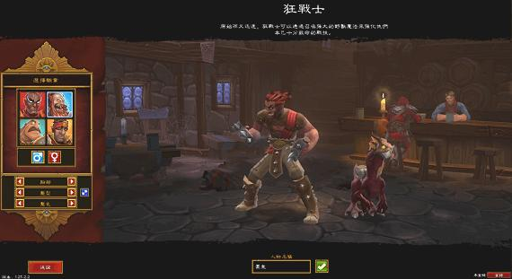

前言
這遊戲我最喜歡的職業是「狂戰士」，雖然剛開始覺得這職業很爛，但因為他有個造型長得很像《快打旋風》的「豪鬼」，所以「外貌協會」的我決定選他靠一雙拳頭打天下！沒想到真的就靠高攻速、高爆擊的普通攻擊，不斷發動只要爆擊就補血的技能，一身垃圾裝就能打遍天下。從來沒練過這麼痛快的角色，好玩到不行！

我選狂戰士，取名為豪鬼，寵物叫做瞬獄殺，踏上與強者決一生死的旅途。
屬性
力量 145，敏捷 291，才能穿 Lv.101 的套裝，然後全點力量。
技能
第一步，到「塞利亞聚居」地找「塔莫爾」，將「開膛破肚（Eviscerate）」洗掉。往後專攻如下技能：
暗影爆發 MAX 瞬獄殺一式。殺進殺出用，主力補血技能。
鮮血飢渴 MAX 瞬獄殺二式。邊普攻邊回血，能讓你與敵人硬碰硬。
護甲撕裂 MAX 提升普攻傷害與防禦。
寒鋼大師 MAX 提升普攻傷害。
狼群 MAX 波動拳。遠攻、清除障礙用。
有剩餘點數時：
憤怒反擊 Lv.11 有效提升普攻的清怪效率，點到 11 就好。
戰鬥標準 MAX 遇到會「擊退」的 BOSS 時施放。
但還是會有剩餘點數：
紅狼 Lv.1 爆擊時波及另一個敵人，威力有如隔山打牛。
狂暴大師 LEFTOVER 增加怒氣時間。每級才 0.5 秒，點數太多再點。
裝備
武器建議至少裝攻速 .48 秒的爪，攻擊力不用管他。「礦山鎮」的「未鑑定物品販子」有不錯機率刷到 .40 秒的「衝擊磨坊」，攻擊力雖然偏低，但仔細衡量，不比 .88 秒、攻擊力高一倍的「賽特羅的咽喉」差！因為同樣時間攻擊力差不多，卻更多爆擊的次數讓你回血。武器能吸血的話就更好了，打到吸血的鑲嵌石建議留一顆備用，不用全賣掉。轉生後，70 級可以刷「古代帝國切片刀」，增加爆擊傷害 60%，可以撐到二轉 90 級，再刷「冰晶統治者」，這是攻速最高的武器，堪稱吸血狂戰士最究極裝備！
護甲以血裝為主，提升回血的幅度，因為技能回的血都是「血量％」，血越多回越多。物理防禦除非差很多，否則可以不用考慮替換。因為我們敏捷高，有高迴避率，而且有學護甲撕裂，可以彌補物理防禦，所以一身藍裝、綠裝也無妨。
要蒐集套裝的話，「良品收集商」那裡常常有意想不到的好貨！
另外，這遊戲很難打到「能穿」的金裝，甚至我懷疑遊戲故意掉落不是我們職業的武器和裝備 XDDD 找「未鑑定物品販子」敗光金錢換金裝，或許是更有效蒐集金裝的方法！但刷武器容易：「直接刷爪子，總會刷到金爪。」刷護具和飾品就很困難了，因為得從四種職業隨機刷，想全身職業專屬金裝，錢根本不夠用。但我們這種「吸血狂」的配法，優點是一身垃圾裝也能打遍天下玩得很快樂，不用為了打不到金裝煩惱、壞了興致。但敗光財產刷套「獵人」飾品，提升 8% 爆擊率，還是值得考慮的～
打法
主力攻擊招式，就是只靠普攻，利用高攻速、高爆擊的特性，不斷「鮮血飢渴」回血。遊戲進行過程，我的狂戰士 85% 情況下都是滿血的。
偶爾看到自己扣 15% 血時，就用「暗影爆發」殺出去，這招讓你「刷一下」血瞬間變滿！追擊逃跑的敵人、或者被敵人擊退無法靠近時，也是用這招！覺得怪物太多，卻還沒學「狼群」時，也是用這招多清幾隻怪。重要性不在話下，因此我優先點滿。為何不乾脆用這招打天下？因為有些怪會讓你 MP 歸零，有些怪會讓你無法動彈，不是想用就用～
以上兩招搭配喝水，讓原本綽號「躺神」的狂戰士，成為「至少來得及喝水」的職業，反而變成不容易死，除非粗心沒在看血量。為何會粗心？因為很少喝水，玩到破關賣了大約 400 瓶撿到的水，從頭到尾喝不到 5 瓶吧？（甚至熟練的話，不用喝半瓶水就可以破關。）
由於一開始都點敏，沒點力，所以有剩餘的技能點數，就先拿來點「寒鋼大師」提升攻擊力。其次是「護甲撕裂」，彌補沒有點體，也能有防禦力的缺憾，同時還能破甲。
最後是「狼群」，狂戰士最強遠攻技能，放下去再爆擊，經常秒殺眼前那堆路障。
心得
這只是休閒模式破關用的配法，可以快速體驗《火炬之光 2》的劇情。
轉生後如果要挑戰高難度關卡吃王打裝，有更好的選擇就是轉攻「狼群」。這招點到「第一階獎勵」後，可以貫穿怪物繼續攻擊下一隻，瞬間秒殺大半畫面的怪，爆擊時也能觸發「鮮血飢渴」回血。畢竟只靠近戰的話，清怪效率不高，卻要被圍毆，狂戰士綽號「躺神」不是叫假的。
不過，這遊戲被打趴沒什麼，不需要太介意，回城就好，不會扣經驗與金錢。尤其怪物自爆或環境爆炸，一次就扣上萬多 HP，偏偏又來個「連環爆」，偶爾被炸死是很正常的～
我覺得狂戰士還有個缺點，就是猛擊 100% 時，動作很不雅 XDDD